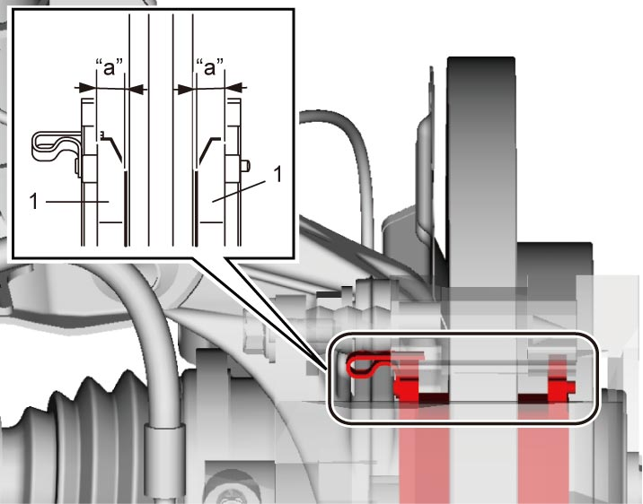

4B
| Front Brake Pad On-Vehicle Inspection |
Check pad linings (1) periodically according to maintenance schedule and whenever wheels are removed (for tire rotation or other reason). Check lining thickness of outside and inside pads.
If lining is worn and its thickness (“a” in figure) is less than the limit, all pads must be replaced at the same time.
Front brake pad thickness (lining thickness) “a”
Standard: 10 mm (0.39 in.)
Limit: 1.0 mm (0.04 in.)

 "Expand image")